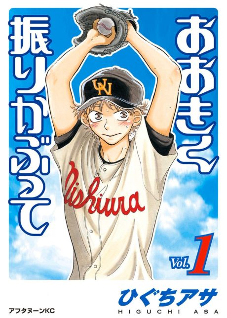

Anime
Anime
Manga2007 · Comedy, Sports
Big Windup!
おおきく振りかぶって
AniList7.6
Animeter—
2 seasons38 ep
MangaCh. 57
Anime finished. Where does the manga pick up?
Start at Chapter57
The two seasons together adapt up to the end of chapter 56 (the fifth-round game against Sakitama), so start at chapter 57 (volume 15). The manga is ongoing.
156ongoing
Season 2Start reading here